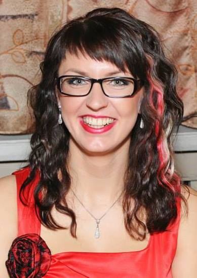

Kadri portfoolio

Isiklik informatsioon
Sündinud olen 13. detsembril 1988 aastal.
Elukohaks on Are vald Pärnumaal.
Hariduskäik
- 2014 aastal alustasin Pärnu Saksa tehnoloogiakoolis graafika kujundaja erialal
- 2008 - 2009 õppisin juuksuriks Pärnu Ametikoolis
- 2002 - 2008 õppisin Pärnu Koidula Gümnaasiumis
- 1997. aastal alustasin kooliteed Are Põhikoolis
Minu hobid
Võib vist öelda, et minu suurim hobi on juuksuritöö.
Minu teine suur kirg on küpsetamine. Olgu selleks siis koogid, kringlid või tordid.
Kolmas hobi, mida meeldib mulle realiseerida just sellisel külmemal aastaajal on kudumine.
mõned pildid hobidest
Kooli tööd